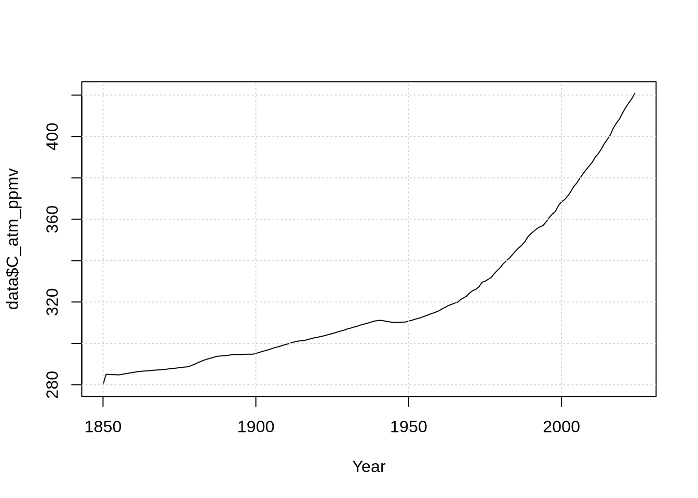
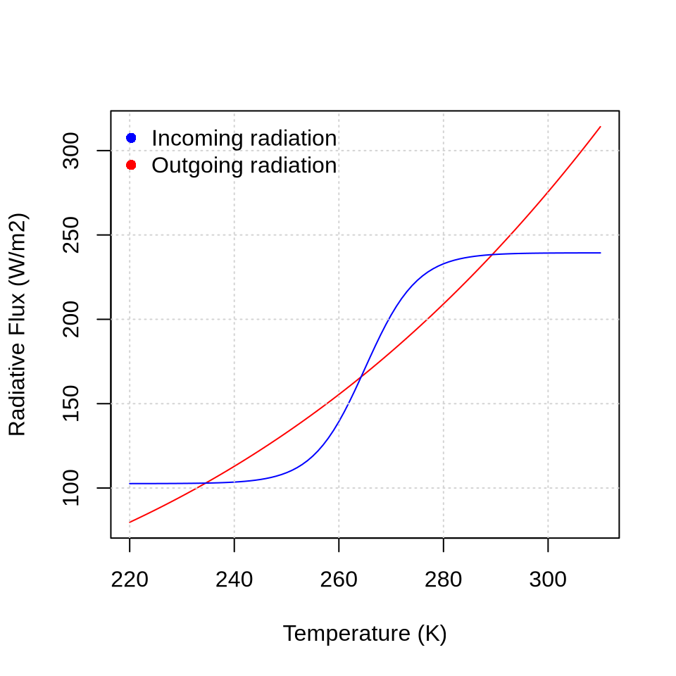
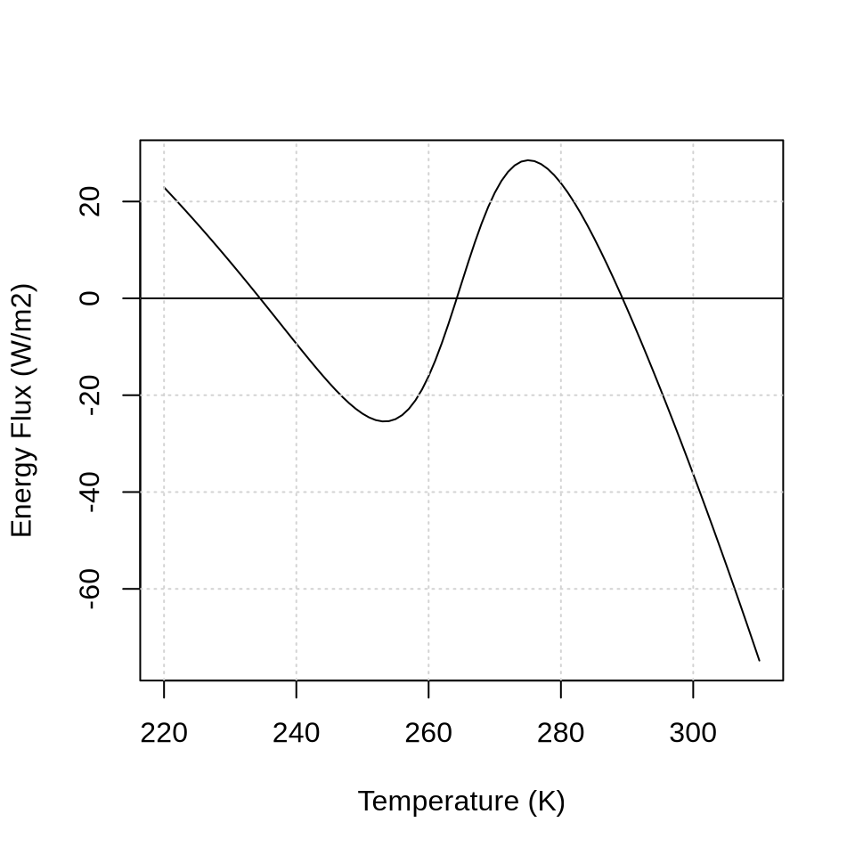

5 Energy Balance
Student Name: ___
5.2 Carbon cycle
\[ C \frac{dT}{dt} = (1 - \alpha(T)) Q - \epsilon \sigma T^4 \]
\[ \alpha(T) = 0.5 - 0.2 \tanh \left( \frac{T-265}{10} \right) \]
- \(Q\) is the mean incoming solar radiation: \(Q = \frac{1}{4} S_0\), where \(S_0\) = 1368 W m\(^{-2}\) is the solar constant, such that \(Q\) = 342 W m\(^{-2}\)
- \(C\) = planetary heat capacity (\(C\) = 5 \(\times\) 10\(^8\) J m\(^{-2}\) K\(^{-1}\)) Schwartz (2007)
T <- seq(220, 310, 1)
# Outgoing radiation following the Stefan-Boltzmann law
emissivity <- 0.6
sigma <- 5.67 * 10^(-8) # Stefan-Boltzmann constant in W m-2 K-4
E_out <- emissivity * sigma * T^4
# Incoming radiation
Q <- 1368 / 4 # mean incoming solar radiation in W m-2
albedo <- 0.5 - 0.2 * tanh((T - 265) / 10)
E_in <- (1 - albedo) * Q
plot(T, E_out,
type = "l", col = "red",
xlab = "Temperature (K)",
ylab = "Radiative Flux (W/m2)"
)
lines(T, E_in, col = "blue")
grid()
legend("topleft", c("Incoming radiation", "Outgoing radiation"), pch = 16, col = c("blue", "red"), bty = "n")
Q <- 1368 / 4 # mean incoming solar radiation in W m-2
# C <- 5 * 10^8 # planetary heat capacity in J m$^{-2}$ K$^{-1}$) [Schwartz (2007)](https://agupubs.onlinelibrary.wiley.com/doi/epdf/10.1029/2007JD008746)
emissivity <- 0.6
sigma <- 5.67 * 10^(-8) # Stefan-Boltzmann constant in W m-2 K-4
T <- seq(220, 310, 1)
albedo <- 0.5 - 0.2 * tanh((T - 265) / 10)
CdTdt <- (1 - albedo) * Q - emissivity * sigma * T^4
plot(T, CdTdt, type = "l", xlab = "Temperature (K)", ylab = "Energy Flux (W/m2)")
grid()
abline(h = 0)
